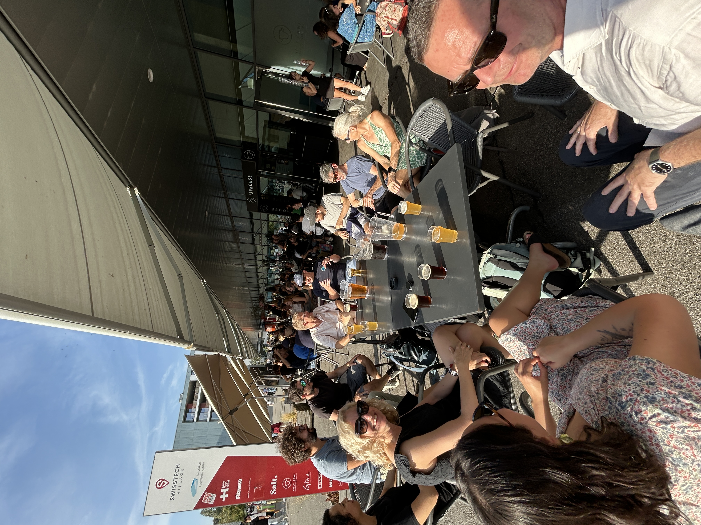
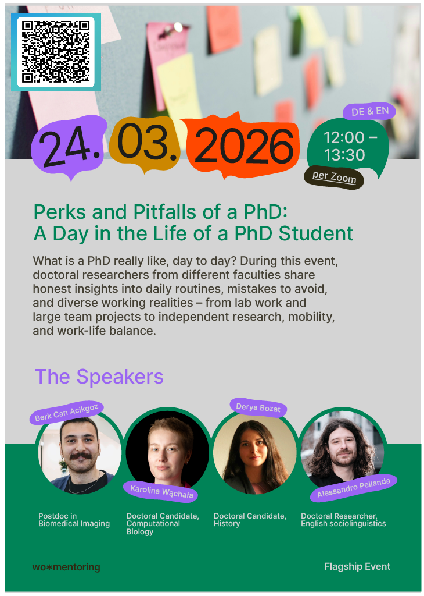
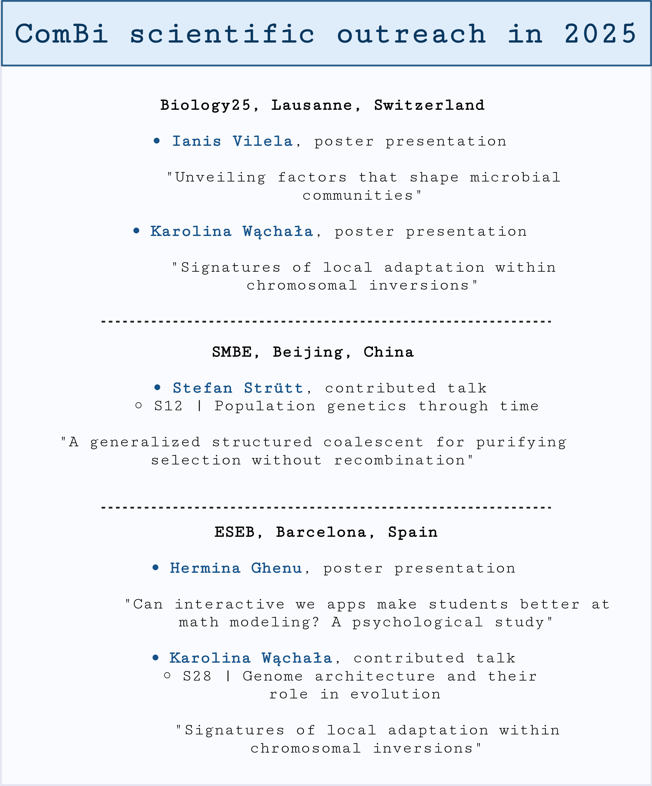
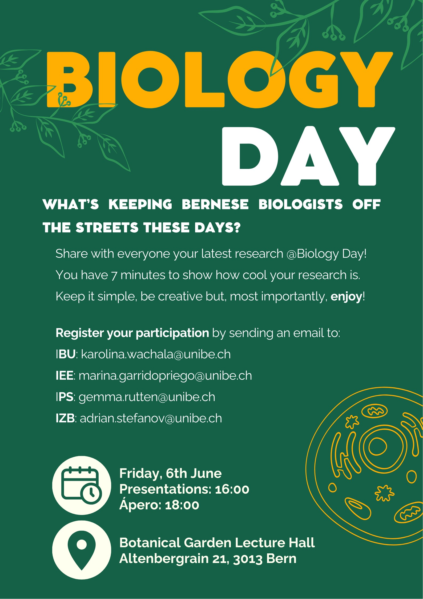
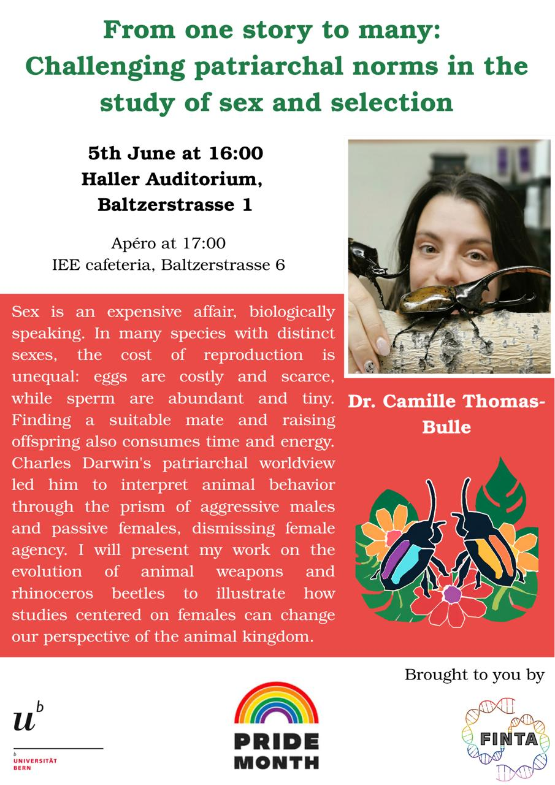

What's up?
New preprint! Environmental gradients and the establishment of chromosomal inversions
This study shows how environmental clines shape the growth and establishment of chromosomal inversions that may support local adaptation.
New preprint! Heterogeneous evolution of effective recombination landscapes across percomorph fishes
Comparisons across four fish lineages reveal how recombination landscapes diverge between populations and species.
New preprint! The influence of incompatibilities and heterosis on hybrid population genetics
This theoretical study explores how hybrid incompatibilities, heterosis, and recombination shape genetic variation in hybrid populations.
New preprint! Recombination on “non-recombining” sex chromosomes: empirical insights from the blackspotted stickleback
Genomic evidence in blackspotted stickleback points to rare recombination within a sex-linked region, challenging the idea that sex chromosome decay is irreversible.


SWIG 2026 in Lausanne | 8 September
ComBi took part in the Swiss Women in Statistics and Data Science meeting in Lausanne.
QUBI: Quantitative Biology
Loraine Hablützel and Emma Ochsner are developing a bridge course that connects statistics and programming with biology through real data and case-based learning.
The Treasure Chest brings statistics to life
Read how The Treasure Chest brings statistics to life through engaging, hands-on learning.

Perks and Pitfalls of a PhD | online panel discussion
Doctoral researchers from different faculties share honest insights into daily life of a PhD student. Sign up using the QR code.

ComBi scientific outreach in 2025
In 2025 ComBi had the opportunity to present at one national meeting and two international conferences. Until next year!

We're running a study on digital learning!
We're running a study to understand whether interactive web apps make students better at applied mathematical modelling in ecology and evolution. Click here to learn more and take part.

Biology Day 2025
The 12th Biology Day is coming up soon! We're looking for entertaining, 7-minute presentations. Contact Karolina Wąchała.

FINTA Pride Month 2025 talk
In celebration of Pride Month, the FINTA group is excited to announce an upcoming talk by Dr. Camille Thomas-Bulle.